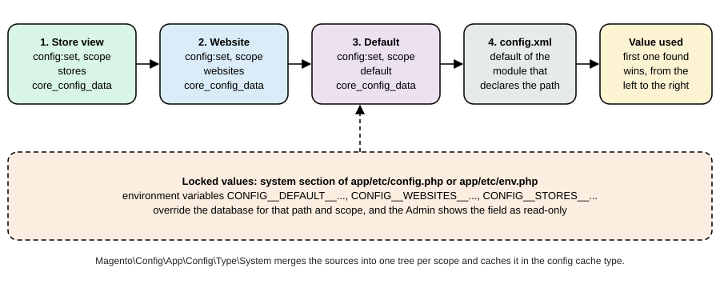

Catalog, Multistore and B2B
|
This content was generated with the assistance of AI and should be verified against the official documentation before being relied on in production. |
This page was written against Magento Open Source and Adobe Commerce 2.4.9 (generally available on 2026-05-12) and checked on 2026-10-27. Everything that runs was run on Mage-OS 3.6.0 (Magento 2.4.9 base) in developer mode. The product types and the scope model exist in every edition. The B2B extension is Adobe Commerce only (Adobe Commerce on cloud infrastructure, on premises and, with its core features pre-installed, Adobe Commerce as a Cloud Service); it is not part of Magento Open Source or Mage-OS, so the B2B part of this page is documentation and could not be run, and says so. The page builds on EAV and Attributes, Declarative Schema and Patches (the scopes are created with a data patch), REST and GraphQL APIs and Admin and Store Setup, and it feeds Checkout and Payments, which uses the same websites.
A Magento installation sells a catalog. Two questions shape everything that follows: what kind of thing is each product (a single item, a family of variants, a kit, a download), and to whom, where and in which language and currency is it sold (the scopes). The first is the product type; the second is the website, store and store view hierarchy that most of the platform’s data and settings hang from. B2B adds a third question, which buyer, and answers it with companies, shared catalogs and negotiated prices.
The running example is the Pocket Coffee shop in its final shape: one Single-origin beans product with 18 variants (origin
by grind by size), a Starter kit, a Brew at home set, a Roastery tasting voucher and a Brewing guide; a European
website in euro with a Spanish and an English store view; and a United States website in dollars with the same catalog and its
own prices. The SKUs carry the prefix PCMS- (Pocket Coffee multistore) and end with the bag size, for example
PCMS-ETH-WHL-250 (Ethiopia Yirgacheffe, whole bean, 250 g); the attribute codes are pcm_origin, pcm_grind and pcm_size.
Product types
Every product has a type (type_id), and the type decides how the product is priced, stocked, added to the cart and what an
order item looks like. The type is chosen when the product is created. The types of Magento Open Source and Adobe Commerce are:
Type (type_id) |
What it is | How it is priced and stocked | Pocket Coffee |
|---|---|---|---|
Simple ( |
One physical item with its own SKU, weight and stock |
Own price, own stock (a source item in Inventory Management) |
Hand grinder |
Virtual ( |
A product without weight that is not shipped (a service, a voucher) |
As a simple product; no shipping step is needed if the cart holds only virtual items |
Roastery tasting voucher |
Configurable ( |
A parent that stands for several simple child products that differ in the values of its configurable attributes |
The parent has no price or stock of its own; the shopper picks the options and the cart receives the child. Each child is a simple product with its own SKU, price, weight and stock |
Single-origin beans |
Grouped ( |
A parent listing several simple products on one page, each added with its own quantity |
No price of its own (the product listing shows the lowest child price); the cart receives each child separately |
Brew at home set |
Bundle ( |
A kit built from options, each option offering one or more simple products; the shopper picks the selections |
Fixed price (the parent’s price, whatever is chosen) or dynamic price (the sum of the selections); weight and SKU can also be fixed or dynamic |
Starter kit |
Downloadable ( |
A digital product with one or more files or links, with a download limit and sharing options |
As a virtual product; the customer gets the links after the order is invoiced (or paid, per configuration) |
Brewing guide |
Gift card ( |
A card with a code and an amount, physical, virtual or combined (Adobe Commerce only) |
Fixed or open amounts |
Not used |
Inventory Management treats the types differently at fulfilment time: simple, configurable, bundle and grouped products
accept the source selection algorithm’s recommendation and allow an override at shipping, while virtual and downloadable products
always use the recommendation (the algorithm runs implicitly when the invoice is created and its result cannot be adjusted).
Types are declared in etc/product_types.xml of a module (the model class that handles pricing and the cart, the price
model, the index priority and the can_use_qty_decimals flag), which is where a custom product type is registered; most shops
never write one, because the combination of a type, attributes and options covers almost every catalog.
A configurable product with 18 variants
The beans product is the classic configurable case, and creating it is the way to see what the type requires. Three attributes
are created with scope: global, the select input and options; they are assigned to the attribute set of the product (an
attribute that is not in the set cannot be used); 18 simple products are created with a value of each attribute and
visibility 1 (not visible individually, the children are reached through the parent); the parent is created with the
type configurable and visibility 4; the parent’s options (configurable-products/{sku}/options) name the attribute ids and the
values that are allowed; and the children are linked one by one (configurable-products/{sku}/child). The script below did it
with the REST API in 18 plus 6 calls. The attribute option payload leaves value empty so that Magento assigns the ids (sending
a numeric-looking value such as 250 made the insert fail with a foreign key error on the options table), and the price of the
children follows the shop’s list: 8.90 per 250 g and 29.90 per kilogram, with Ethiopia 1.00 more per 250 g (4.00 more per
kilogram).
#!/usr/bin/env python3
"""Creates the Pocket Coffee configurable product over REST: 3 attributes, 18 simple variants, 1 parent."""
import itertools, json, os, sys, urllib.error, urllib.request
BASE = 'http://localhost:8082/rest/V1'
def call(method, path, body=None, token=None, store=None):
url = (BASE if store is None else f'http://localhost:8082/rest/{store}/V1') + path
req = urllib.request.Request(url, json.dumps(body).encode() if body is not None else None,
{'Content-Type': 'application/json', **({'Authorization': f'Bearer {token}'} if token else {})},
method=method)
try:
return json.load(urllib.request.urlopen(req))
except urllib.error.HTTPError as e:
print('ERROR', method, path, e.read().decode()[:400], file=sys.stderr)
raise
token = call('POST', '/integration/admin/token', {'username': os.environ['ADMIN_USER'], 'password': os.environ['ADMIN_PASSWORD']})
ATTRS = {
'pcm_origin': ('Origin', [('ETH', 'Ethiopia Yirgacheffe'), ('COL', 'Colombia Huila'), ('BRA', 'Brazil Cerrado')]),
'pcm_grind': ('Grind', [('WHL', 'Whole bean'), ('ESP', 'Espresso'), ('FIL', 'Filter')]),
'pcm_size': ('Size', [('250', '250 g'), ('1KG', '1 kg')]),
}
option_ids = {}
for code, (label, options) in ATTRS.items():
try:
call('GET', f'/products/attributes/{code}', None, token)
except urllib.error.HTTPError:
call('POST', '/products/attributes', {'attribute': {
'attribute_code': code, 'frontend_input': 'select', 'default_frontend_label': label,
'scope': 'global', 'is_required': False, 'is_user_defined': True, 'is_filterable': 1 if code == 'pcm_origin' else 0,
'is_visible_on_front': True, 'frontend_labels': [],
'options': [{'label': text, 'value': '', 'sort_order': i} for i, (key, text) in enumerate(options)]}}, token)
saved = call('GET', f'/products/attributes/{code}', None, token)
option_ids[code] = {o['value']: o['label'] for o in saved['options'] if o['value']}
# saved options use numeric ids as values; map our label back to id
option_ids[code] = {text: o['value'] for o in saved['options'] if o['value'] for _, text in options if o['label'] == text}
try:
call('POST', '/products/attribute-sets/attributes',
{'attributeSetId': 4, 'attributeGroupId': 7, 'attributeCode': code, 'sortOrder': 50}, token)
except urllib.error.HTTPError:
pass
children = []
for (okey, otext), (gkey, gtext), (skey, stext) in itertools.product(ATTRS['pcm_origin'][1], ATTRS['pcm_grind'][1], ATTRS['pcm_size'][1]):
sku = f'PCMS-{okey}-{gkey}-{skey}'
price = 8.90 if skey == '250' else 29.90
if okey == 'ETH':
price += 1.00 if skey == '250' else 4.00
call('POST', '/products', {'product': {
'sku': sku, 'name': f'Single-origin beans, {otext}, {gtext.lower()}, {stext}',
'attribute_set_id': 4, 'type_id': 'simple', 'price': price, 'status': 1, 'visibility': 1,
'weight': 0.25 if skey == '250' else 1,
'extension_attributes': {'stock_item': {'qty': 100, 'is_in_stock': True}},
'custom_attributes': [
{'attribute_code': 'pcm_origin', 'value': option_ids['pcm_origin'][otext]},
{'attribute_code': 'pcm_grind', 'value': option_ids['pcm_grind'][gtext]},
{'attribute_code': 'pcm_size', 'value': option_ids['pcm_size'][stext]}]}}, token)
children.append(sku)
call('POST', '/products', {'product': {
'sku': 'PCMS-BEANS', 'name': 'Single-origin beans', 'attribute_set_id': 4, 'type_id': 'configurable',
'price': 8.90, 'status': 1, 'visibility': 4,
'extension_attributes': {'stock_item': {'is_in_stock': True}},
'custom_attributes': [{'attribute_code': 'url_key', 'value': 'single-origin-beans'}]}}, token)
for code in ATTRS:
attr = call('GET', f'/products/attributes/{code}', None, token)
call('POST', '/configurable-products/PCMS-BEANS/options', {'option': {
'attribute_id': str(attr['attribute_id']), 'label': attr['default_frontend_label'],
'position': 0, 'is_use_default': True,
'values': [{'value_index': int(v)} for v in option_ids[code].values()]}}, token)
for sku in children:
call('POST', '/configurable-products/PCMS-BEANS/child', {'childSku': sku}, token)
print('created', len(children), 'variants')The result, read back through GraphQL for the Spanish store view:
{"sku":"PCMS-BEANS","__typename":"ConfigurableProduct","name":"Café en grano de origen único",
"configurable_options":["pcm_origin","pcm_grind","pcm_size"],"variants":18}Four details are worth knowing. The attributes must be global in scope: a configurable attribute that varies per store view
cannot be a variation axis. The parent has no meaningful price; the lowest child price is what the listing shows
("As low as") and it is computed by the price indexer, so a new product is invisible in listings until the indexers have run.
Each child keeps its own stock; the parent is in stock when at least one child is. And the children must be assigned to the
same websites as the parent: a child that is not assigned to a website cannot be sold there.
#!/usr/bin/env python3
"""Pocket Coffee products of the other types: simple, virtual, bundle, grouped and downloadable."""
import base64, json, os, urllib.error, urllib.request
def call(method, path, body=None, token=None):
req = urllib.request.Request('http://localhost:8082/rest/V1' + path, json.dumps(body).encode() if body is not None else None,
{'Content-Type': 'application/json', **({'Authorization': f'Bearer {token}'} if token else {})}, method=method)
try:
return json.load(urllib.request.urlopen(req))
except urllib.error.HTTPError as e:
print('ERROR', method, path, e.read().decode()[:500]); raise
token = call('POST', '/integration/admin/token', {'username': os.environ['ADMIN_USER'], 'password': os.environ['ADMIN_PASSWORD']})
stock = {'stock_item': {'qty': 100, 'is_in_stock': True}}
def product(sku, name, type_id, price, **extra):
body = {'sku': sku, 'name': name, 'attribute_set_id': 4, 'type_id': type_id, 'price': price, 'status': 1,
'visibility': 4, **extra}
call('POST', '/products', {'product': body}, token)
for website_id in (2, 3):
call('POST', f'/products/{sku}/websites', {'productWebsiteLink': {'sku': sku, 'websiteId': website_id}}, token)
product('PCMS-GRINDER', 'Hand grinder', 'simple', 18.00, weight=0.6, extension_attributes=stock)
product('PCMS-VOUCHER', 'Roastery tasting voucher', 'virtual', 15.00, extension_attributes=stock)
product('PCMS-STARTER-KIT', 'Starter kit', 'bundle', 24.00, weight=0.85, extension_attributes={
'stock_item': {'is_in_stock': True},
'bundle_product_options': [
{'title': 'Grinder', 'type': 'select', 'required': True, 'position': 1,
'product_links': [{'sku': 'PCMS-GRINDER', 'qty': 1, 'is_default': True, 'can_change_quantity': 0, 'position': 1}]},
{'title': 'Beans, 250 g', 'type': 'select', 'required': True, 'position': 2,
'product_links': [{'sku': 'PCMS-ETH-WHL-250', 'qty': 1, 'is_default': True, 'can_change_quantity': 0, 'position': 1},
{'sku': 'PCMS-COL-WHL-250', 'qty': 1, 'is_default': False, 'can_change_quantity': 0, 'position': 2}]}]},
custom_attributes=[{'attribute_code': 'price_type', 'value': '1'}, {'attribute_code': 'sku_type', 'value': '1'},
{'attribute_code': 'weight_type', 'value': '1'}, {'attribute_code': 'price_view', 'value': '0'}])
product('PCMS-BREW-SET', 'Brew at home set', 'grouped', 0, extension_attributes={'stock_item': {'is_in_stock': True}},
product_links=[
{'sku': 'PCMS-BREW-SET', 'link_type': 'associated', 'linked_product_sku': 'PCMS-GRINDER', 'linked_product_type': 'simple',
'position': 1, 'extension_attributes': {'qty': 1}},
{'sku': 'PCMS-BREW-SET', 'link_type': 'associated', 'linked_product_sku': 'PCMS-ETH-WHL-250', 'linked_product_type': 'simple',
'position': 2, 'extension_attributes': {'qty': 2}}])
product('PCMS-GUIDE', 'Brewing guide (PDF)', 'downloadable', 4.00, extension_attributes={
'stock_item': {'is_in_stock': True},
'downloadable_product_links': [{'title': 'Brewing guide', 'sort_order': 1, 'is_shareable': 2, 'price': 0,
'number_of_downloads': 5, 'link_type': 'file',
'link_file_content': {'file_data': base64.b64encode(b'%PDF-1.4 brewing guide placeholder').decode(),
'name': 'brewing-guide.pdf'}}]})
print('done')Source: Adobe Commerce docs: Create a bundle product with REST; Adobe Commerce docs: Create a grouped product with REST
The five products of that script were created and read back with GraphQL (__typename, minimum price, options):
PCMS-GRINDER SimpleProduct 18.00 EUR
PCMS-VOUCHER VirtualProduct 15.00 EUR
PCMS-STARTER-KIT BundleProduct 24.00 EUR options: Grinder (required), Beans, 250 g (required: Ethiopia or Colombia)
PCMS-BREW-SET GroupedProduct 9.90 EUR (the lowest child price) with two child lines
PCMS-GUIDE DownloadableProduct 4.00 EURTwo of the products were not salable at first, and each case teaches something. The downloadable product had been created
with stock_item.is_in_stock true but no quantity, so its source item had quantity 0 and status 0 and it did not appear in
GraphQL; a downloadable product is source-based (it has stock of its own, like a simple one), so it needs qty too. The bundle
was created while its children’s stock status was not yet indexed and came out of the index as unsalable; saving it again
after the inventory and stock indexers had run made it salable, because the stock of a bundle, a grouped or a configurable
product is derived from its children and not stored (inventory_stock_1 shows quantity 0 and is_salable 1 for it).
Asking GET /V1/inventory/get-product-salable-quantity/{sku}/{stockId} for such a parent answers
Can't check requested quantity for products without Source Items support, which is the same fact seen from the API.
A note on this shop’s bundle: the grouped item qty extension attribute (the default quantity of each line, 2 for the beans
bag) was accepted by the REST call, and GraphQL returned a default quantity of 1 for both lines; set the default quantities in the
Admin when they matter, or check the returned values.
Scopes: global, website, store and store view
The model
Magento has a four-level hierarchy for data and settings. Global is the whole installation. A website is the top-level
container: it has its own base currency (when the price scope is website), its own payment and shipping methods, its own
customers (by default), its own domain, and one or more stores. A store, called a store group in the code and the
database (store_group), belongs to a website and owns the root category, that is, the catalog tree; it has one or more
store views. A store view is a presentation of a store: a language, a locale, translated content and attribute values, and
its own URL keys. The Admin and the documentation call the middle level a store; the code calls it a group; this page says
"store (group)" to keep both visible.

What decides at which level a thing lives, according to the documentation and the observed behaviour:
| Level | Typical content |
|---|---|
Global |
The installation: indexers, attribute definitions, the price scope setting, the admin users, the EAV schema, URL rewrites tables, the setting of how customer accounts are shared |
Website |
Prices (when the price scope is website) and base and display currency, payment and shipping methods and their credentials, taxes, default country, stock assignment (Inventory Management links a stock to a website through a sales channel), customer accounts (per website by default) and the base URL |
Store (group) |
The root category: which category tree the stores under it show. All stores of a website share the cart, the customer sessions and the checkout |
Store view |
Language and locale, translated names and descriptions (attribute values of scope store view), URL keys, CMS pages and blocks, store-view-specific design, email templates, the translations of the interface, the display currency symbol |
A store view code appears in places that matter: the REST URL (/rest/pc_es/V1/...), the Store header of GraphQL, the store
column of almost every scoped table and the prefix of orders (see the previous page). A website
code is used in MAGE_RUN_CODE when MAGE_RUN_TYPE is website.
Creating the scopes
Websites, store groups and store views can be created in the Admin (Stores > Settings > All Stores) or in code. A data patch is
the right form for a project that must be reproducible, because it runs once per environment on setup:upgrade, is recorded in
patch_list and can be reviewed. Creating a scope entity needs its own order: the website, then the group (which needs the
website id and a root category), then the website’s default group, then the views (each needs the website and group ids), then the
group’s default store. The patch below does that for Pocket Coffee, is idempotent (it stops if the website exists) and reinitialises
the store manager at the end:
<?php
declare(strict_types=1);
namespace PocketCoffee\Scopes\Setup\Patch\Data;
use Magento\Framework\Setup\Patch\DataPatchInterface;
use Magento\Store\Model\GroupFactory;
use Magento\Store\Model\ResourceModel\Group as GroupResource;
use Magento\Store\Model\ResourceModel\Store as StoreResource;
use Magento\Store\Model\ResourceModel\Website as WebsiteResource;
use Magento\Store\Model\StoreFactory;
use Magento\Store\Model\StoreManagerInterface;
use Magento\Store\Model\WebsiteFactory;
/**
* Pocket Coffee scopes:
*
* website pocketcoffee_eu (EUR) group pocketcoffee_shop views pc_es (default), pc_en
* website pocketcoffee_us (USD) group pocketcoffee_us_shop view pc_us
*/
class CreateScopes implements DataPatchInterface
{
private const DEFAULT_ROOT_CATEGORY_ID = 2;
public function __construct(
private readonly WebsiteFactory $websiteFactory,
private readonly WebsiteResource $websiteResource,
private readonly GroupFactory $groupFactory,
private readonly GroupResource $groupResource,
private readonly StoreFactory $storeFactory,
private readonly StoreResource $storeResource,
private readonly StoreManagerInterface $storeManager
) {
}
/**
* @inheritdoc
*/
public function apply(): self
{
$this->createWebsite('pocketcoffee_eu', 'Pocket Coffee EU', 'pocketcoffee_shop', 'Pocket Coffee Shop', [
['pc_es', 'Español'],
['pc_en', 'English'],
]);
$this->createWebsite('pocketcoffee_us', 'Pocket Coffee US', 'pocketcoffee_us_shop', 'Pocket Coffee US Shop', [
['pc_us', 'English (US)'],
]);
// Make the running process see the new scopes (the patch may be followed by other patches)
$this->storeManager->reinitStores();
return $this;
}
private function createWebsite(string $code, string $name, string $groupCode, string $groupName, array $views): void
{
$website = $this->websiteFactory->create();
$this->websiteResource->load($website, $code, 'code');
if ($website->getId()) {
return; // idempotent
}
$website->setCode($code)->setName($name)->setIsDefault(0);
$this->websiteResource->save($website);
$group = $this->groupFactory->create();
$group->setWebsiteId((int) $website->getId())
->setCode($groupCode)
->setName($groupName)
->setRootCategoryId(self::DEFAULT_ROOT_CATEGORY_ID);
$this->groupResource->save($group);
$website->setDefaultGroupId((int) $group->getId());
$this->websiteResource->save($website);
foreach ($views as $position => [$viewCode, $viewName]) {
$store = $this->storeFactory->create();
$store->setCode($viewCode)
->setName($viewName)
->setWebsiteId((int) $website->getId())
->setGroupId((int) $group->getId())
->setSortOrder($position)
->setIsActive(1);
$this->storeResource->save($store);
if ($position === 0) {
$group->setDefaultStoreId((int) $store->getId());
$this->groupResource->save($group);
}
}
}
/**
* @inheritdoc
*/
public static function getDependencies(): array
{
return [];
}
/**
* @inheritdoc
*/
public function getAliases(): array
{
return [];
}
}After bin/magento module:enable PocketCoffee_Scopes && bin/magento setup:upgrade the CLI listed the hierarchy:
$ bin/magento store:list
+----+------------+----------+--------------------+---------+------------+-----------+
| ID | Website ID | Group ID | Name | Code | Sort Order | Is Active |
+----+------------+----------+--------------------+---------+------------+-----------+
| 0 | 0 | 0 | Admin | admin | 0 | 1 |
| 1 | 1 | 1 | Default Store View | default | 0 | 1 |
| 2 | 2 | 2 | Español | pc_es | 0 | 1 |
| 3 | 2 | 2 | English | pc_en | 1 | 1 |
| 4 | 3 | 3 | English (US) | pc_us | 0 | 1 |
+----+------------+----------+--------------------+---------+------------+-----------+
$ bin/magento store:website:list
| 0 | 0 | Admin | admin | 0 | 0 |
| 1 | 1 | Main Website | base | 0 | 1 |
| 2 | 2 | Pocket Coffee EU | pocketcoffee_eu | 0 | 0 |
| 3 | 3 | Pocket Coffee US | pocketcoffee_us | 0 | 0 |The same data is available over REST for an administrator (GET /V1/store/websites, /store/storeGroups, /store/storeViews,
/store/storeConfigs); the last of them returns, per store view, the locale, currencies and base URLs, which is a convenient way for
an integration to discover the shop:
{"id":2,"code":"pc_es","website_id":2,"locale":"es_ES","base_currency_code":"EUR","default_display_currency_code":"EUR","base_url":"http://es.pocketcoffee.test:8082/"}
{"id":3,"code":"pc_en","website_id":2,"locale":"en_GB","base_currency_code":"EUR","default_display_currency_code":"EUR","base_url":"http://en.pocketcoffee.test:8082/"}
{"id":4,"code":"pc_us","website_id":3,"locale":"en_US","base_currency_code":"USD","default_display_currency_code":"USD","base_url":"http://us.pocketcoffee.test:8082/"}Two things happened without being asked. The new websites were linked to the Default Stock of Inventory Management through
sales channels (inventory_stock_sales_channel holds a row of type website for base, pocketcoffee_eu and
pocketcoffee_us, all with stock_id 1), so the products were salable on them as soon as they were assigned. And each store
view got its own order sequence (sequence_order_2 to sequence_order_4), with a profile whose prefix is the store view id.
What did not happen automatically: the catalog is empty for a new website until the products are assigned to it
(POST /V1/products/{sku}/websites, or the Product in Websites section of the product page), URL rewrites for the products
exist only for store views that have been saved with the product (the beans got theirs for the Spanish view when its name was
saved), and the indexers have to run for the new scope (bin/magento indexer:reindex).
Configuration scope
Settings have a scope too, and the lookup rule is always the same: the value of the store view if there is one, otherwise the
website’s, otherwise the default’s, otherwise the config.xml default of the module that declares the path. A field is
editable at the levels that its system.xml declares (showInDefault, showInWebsite, showInStore), and the Admin shows
the scope under the field label unless the installation is in single store mode.

bin/magento config:set and config:show take --scope (default, websites, stores) and --scope-code. The settings of
the Pocket Coffee websites were applied like this:
bin/magento config:set catalog/price/scope 1 # 0 = global, 1 = website
bin/magento config:set --scope=websites --scope-code=pocketcoffee_eu currency/options/allow EUR,USD # allow first,
bin/magento config:set --scope=websites --scope-code=pocketcoffee_eu currency/options/default EUR # then default,
bin/magento config:set --scope=websites --scope-code=pocketcoffee_eu currency/options/allow EUR # then narrow
bin/magento config:set --scope=websites --scope-code=pocketcoffee_us currency/options/allow USD,EUR
bin/magento config:set --scope=websites --scope-code=pocketcoffee_us currency/options/default USD
bin/magento config:set --scope=stores --scope-code=pc_es general/locale/code es_ES
bin/magento config:set --scope=stores --scope-code=pc_en general/locale/code en_GB
bin/magento config:set --scope=stores --scope-code=pc_us general/locale/code en_US
bin/magento config:set --scope=websites --scope-code=pocketcoffee_eu carriers/flatrate/price 4.90The order of the three currency commands is not arbitrary. Magento validates the combination when each value is saved, so
that the default display currency must be among the allowed ones: setting default to EUR while the website still inherited an
allow of USD failed with Sorry, the default display currency you selected is not available in allowed currencies, and so
did setting allow to EUR while the default was still USD. The way out is to widen the allowed list first, change the
default, then narrow the list. The base currency (currency/options/base) can be set per website only while the price scope is
website; with a global scope there is one base currency for the installation. After the commands the report below, written with
ScopeConfigInterface::getValue($path, ScopeInterface::SCOPE_STORES, $code) (the code that a module uses to read a
setting for a given view), shows the resolved values; the flat rate is 4.90 only where the website overrides it:
<?php
declare(strict_types=1);
use Magento\Framework\App\Bootstrap;
use Magento\Framework\App\Config\ScopeConfigInterface;
use Magento\Store\Model\ScopeInterface;
use Magento\Store\Model\StoreManagerInterface;
require '/var/www/html/app/bootstrap.php';
$objectManager = Bootstrap::create(BP, $_SERVER)->getObjectManager();
$objectManager->get(Magento\Framework\App\State::class)->setAreaCode('frontend');
$storeManager = $objectManager->get(StoreManagerInterface::class);
$config = $objectManager->get(ScopeConfigInterface::class);
printf("%-8s %-17s %-22s %-6s %-6s %s\n", 'view', 'website', 'store (group)', 'locale', 'base', 'carrier flatrate price');
foreach ($storeManager->getStores() as $store) {
$code = $store->getCode();
printf(
"%-8s %-17s %-22s %-6s %-6s %s\n",
$code,
$storeManager->getWebsite($store->getWebsiteId())->getCode(),
$storeManager->getGroup($store->getStoreGroupId())->getCode(),
$config->getValue('general/locale/code', ScopeInterface::SCOPE_STORES, $code),
$config->getValue('currency/options/base', ScopeInterface::SCOPE_STORES, $code),
$config->getValue('carriers/flatrate/price', ScopeInterface::SCOPE_STORES, $code)
);
}Source: Adobe Commerce: Set the scope
view website store (group) locale base carrier flatrate price
default base main_website_store en_US USD 5.00
pc_es pocketcoffee_eu pocketcoffee_shop es_ES EUR 4.90
pc_en pocketcoffee_eu pocketcoffee_shop en_GB EUR 4.90
pc_us pocketcoffee_us pocketcoffee_us_shop en_US USD 5.00A value can also be locked in app/etc/config.php or app/etc/env.php (the system section) or set with an environment
variable of the form CONFIG__DEFAULT__PAYMENT__... / CONFIG__WEBSITES__... / CONFIG__STORES__...; a locked value overrides the
database for its scope and the Admin field is read-only. It is the way Adobe’s deployment tooling carries settings from an
environment to the next. It also explains a puzzle seen during the testing: while a config.php with a system section that held the current default
values was in place (the kind of file bin/magento app:config:dump writes), config:set at the default scope still answered
Value was saved and config:show printed the new value, yet the code reading the setting through ScopeConfigInterface kept
getting the old one, and the payment method that depended on it stayed unavailable; setting the value at the website scope
(which that file did not lock) changed the behaviour at once. In developer mode a changed config.php also makes the storefront
and GraphQL answer The configuration file has changed. Run the "app:config:import" or the "setup:upgrade" command to
synchronize the configuration until that command has run, which happens whenever config.php is rewritten, for example by
module:enable.
Attribute and price scope
Each EAV attribute has a scope: global (one value), website or store view (one value per scope, falling back to the default).
The scope is a property of the attribute definition (is_global in catalog_eav_attribute), and for products it decides which
store_id rows can exist in the catalog_product_entity_* value tables: store_id 0 is the default value and a row for a store
view overrides it. In the shop the beans' name was changed for the Spanish view only:
sku store_id value
PCMS-BEANS 0 Single-origin beans
PCMS-BEANS 2 Café en grano de origen únicoand a store scoped REST call is how it was done (PUT /rest/pc_es/V1/products/PCMS-BEANS with the new name and url_key), with
the result visible in GraphQL (Store: pc_es returns the Spanish name and the Spanish URL key cafe-en-grano-de-origen-unico; the other
views return Single-origin beans and single-origin-beans).
Price is special. Its scope is a global setting, catalog/price/scope: with 0 (global, the default) one price serves all
websites, and with 1 (website) each website can have its own, entered by choosing the website scope on the product page or by
calling the REST API for a store view of the website; Magento stores it for the store views of that website. Adobe’s documentation
says that Commerce does not allow a price per store, only per website, and that the price scope is the switch that makes the
website prices possible. With the website scope the prices of Pocket Coffee diverge:
PCMS-ETH-WHL-250 store_id 0 (default) 9.90 store_id 4 (pc_us) 10.90
GraphQL, Store: pc_es -> 9.9 EUR Store: pc_us -> 10.9 USDA price entered once (9.90) means 9.90 in the base currency of whichever website reads it: 9.90 EUR in the European website and 9.90 USD in the American one, until a website-scope value overrides it. Display currencies convert from the base through the currency rates; the rates and their import services are in Stores > Currency Rates. The price index is built per website and per customer group, so adding websites multiplies its size, and a customer group can exclude websites to keep it smaller.
#!/usr/bin/env python3
"""Assigns the Pocket Coffee products to the two new websites and sets scope-specific values."""
import itertools, json, os, urllib.error, urllib.request
def call(method, path, body=None, token=None, store=None):
root = 'http://localhost:8082/rest/' + (store + '/' if store else '') + 'V1'
req = urllib.request.Request(root + path, json.dumps(body).encode() if body is not None else None,
{'Content-Type': 'application/json', **({'Authorization': f'Bearer {token}'} if token else {})}, method=method)
try:
return json.load(urllib.request.urlopen(req))
except urllib.error.HTTPError as e:
print('ERROR', method, root + path, e.read().decode()[:300]); raise
token = call('POST', '/integration/admin/token', {'username': os.environ['ADMIN_USER'], 'password': os.environ['ADMIN_PASSWORD']})
skus = ['PCMS-BEANS'] + [f'PCMS-{o}-{g}-{s}' for o, g, s in itertools.product(['ETH', 'COL', 'BRA'], ['WHL', 'ESP', 'FIL'], ['250', '1KG'])]
for sku in skus:
for website_id in (2, 3):
call('POST', f'/products/{sku}/websites', {'productWebsiteLink': {'sku': sku, 'websiteId': website_id}}, token)
# US website: USD prices (price scope = website, so a value saved in a store view of the website applies to the whole website)
for sku in skus[1:]:
size = sku.rsplit('-', 1)[1]
usd = 9.90 if size == '250' else 32.90
if '-ETH-' in sku:
usd += 1.00 if size == '250' else 4.00
call('PUT', f'/products/{sku}', {'product': {'sku': sku, 'price': usd}}, token, store='pc_us')
# Spanish store view: translated name of the parent product
call('PUT', '/products/PCMS-BEANS', {'product': {'sku': 'PCMS-BEANS', 'name': 'Café en grano de origen único',
'custom_attributes': [{'attribute_code': 'url_key', 'value': 'cafe-en-grano-de-origen-unico'}]}}, token, store='pc_es')
print('done')Source: Adobe Commerce: Price scope
The page of the documentation on multiple websites adds three rules of thumb that matched what was seen: websites are the unit for completely separate sites that must not share a cart, delivery methods or payment methods; stores below one website share cart, sessions and payment gateways but have their own catalog structure (root category); and inventory can be managed at website or global level only, never per store.
Serving several websites and store views
A request reaches one scope. Magento decides which with the variables MAGE_RUN_TYPE (website or store, where store means
a store view) and MAGE_RUN_CODE (the code of that website or view) in the environment of the PHP process, and the web server sets them from
the host name. Without them the default website and view answer. The variables are the same on every web server; only
the way to set them differs. In nginx Adobe’s example maps the host to the code and the sample configuration passes both to FastCGI:
map $http_host $MAGE_RUN_CODE {
default '';
es.pocketcoffee.test pc_es;
en.pocketcoffee.test pc_en;
}
server {
listen 80;
server_name es.pocketcoffee.test en.pocketcoffee.test;
set $MAGE_ROOT /var/www/html/magento2;
set $MAGE_MODE developer;
set $MAGE_RUN_TYPE store; # a store view; use "website" with a website code
include /var/www/html/magento2/nginx.conf;
}The test shop runs Apache with AllowOverride All, so the same mapping is done in the .htaccess file of the document root with
SetEnvIf on the Host header, one pair of lines per domain: a view for the Spanish and the English domains and a website for
the American one. Each scope also needs its base URL (the setting web/unsecure/base_url and web/secure/base_url, set at the
website scope for the website and at the store view scope for each view), or Magento redirects the visitor to the default
domain.
# /var/www/html/.htaccess (the document root of the container), appended to the existing rewrite rules
SetEnvIf Host "^es\.pocketcoffee\.test" MAGE_RUN_TYPE=store
SetEnvIf Host "^es\.pocketcoffee\.test" MAGE_RUN_CODE=pc_es
SetEnvIf Host "^en\.pocketcoffee\.test" MAGE_RUN_TYPE=store
SetEnvIf Host "^en\.pocketcoffee\.test" MAGE_RUN_CODE=pc_en
SetEnvIf Host "^us\.pocketcoffee\.test" MAGE_RUN_TYPE=website
SetEnvIf Host "^us\.pocketcoffee\.test" MAGE_RUN_CODE=pocketcoffee_usbin/magento config:set --scope=websites --scope-code=pocketcoffee_eu web/unsecure/base_url http://eu.pocketcoffee.test:8082/
bin/magento config:set --scope=stores --scope-code=pc_es web/unsecure/base_url http://es.pocketcoffee.test:8082/
bin/magento config:set --scope=stores --scope-code=pc_en web/unsecure/base_url http://en.pocketcoffee.test:8082/
bin/magento config:set --scope=websites --scope-code=pocketcoffee_us web/unsecure/base_url http://us.pocketcoffee.test:8082/
# the same four commands for web/secure/base_urlWith the three host names pointed at the local machine (curl --resolve es.pocketcoffee.test:8082:127.0.0.1 ...; the
domains end in .test, a reserved top-level domain), the same product answered differently by domain:
http://es.pocketcoffee.test:8082/cafe-en-grano-de-origen-unico.html 200 <html lang="es"> priceFormat "%s €", decimal "," amount 8.9 title: Café en grano de origen único
http://en.pocketcoffee.test:8082/single-origin-beans.html 200 <html lang="en"> priceFormat "€%s", decimal "." amount 8.9 title: Single-origin beans
http://us.pocketcoffee.test:8082/single-origin-beans.html 200 <html lang="en"> priceFormat "$%s", decimal "." amount 9.9 title: Single-origin beans(The titles on the test shop end with the text [hello], a leftover of another example module that appends it to product names.)
The first two lines are the same website with two store views: the price is the same (8.90, the lowest variant) and the language,
the URL key and the number format are not. The third is the other website, with its own base currency and prices (the lowest
variant costs 9.90 there, because the American price list is higher). The checkout of each domain is independent: the cart and
the session of the Spanish domain do not exist on the American one, and the first order placed in the Spanish view got the number 2000000001,
because the view’s own sequence starts at 1 with the prefix 2.
For headless storefronts the domain does not decide the scope; the caller does. REST puts the store view code in the URL
(/rest/pc_es/V1/products/PCMS-BEANS; the code all addresses every view for writes and default is the default view) and GraphQL
takes the Store header. The following query and its answers are the check that scopes work in the API:
for store in default pc_es pc_en pc_us; do
curl -s -X POST http://localhost:8082/graphql -H 'Content-Type: application/json' -H "Store: $store" \
-d '{"query":"{ storeConfig { store_code website_code base_currency_code locale } products(filter:{sku:{eq:\"PCMS-BEANS\"}}) { items { name url_key } } }"}'
donedefault base USD en_US Single-origin beans single-origin-beans
pc_es pocketcoffee_eu EUR es_ES Café en grano de origen único cafe-en-grano-de-origen-unico
pc_en pocketcoffee_eu EUR en_GB Single-origin beans single-origin-beans
pc_us pocketcoffee_us USD en_US Single-origin beans single-origin-beansWhat else depends on the scope
-
Customers. By default a customer account belongs to one website (
customer/account_share/scopeis 1 in the module defaults; 0 shares accounts across all websites). It was checked: the customer created on the main website received a token on/rest/V1/integration/customer/token, and the same e-mail address and password on/rest/pc_es/V1/...and/rest/pc_us/V1/...answeredThe account sign-in was incorrect or your account is disabled temporarily. A shop that wants one login for all its websites sets the sharing scope to global, after which e-mail addresses must be unique across all of them. -
Orders, invoices and credit memos have per-view sequences, so the number says where the order was placed; changing a sequence after a restore is an
ALTER TABLEof the sequence table, which Adobe documents. -
Payment and shipping methods are website settings, so the American website needs its own flat rate and its own provider account; the Pocket Coffee Pay method is active on the European website and inherits the default elsewhere (see Checkout and Payments).
-
Stock. Inventory Management assigns a stock to each website through a sales channel. All three websites share the Default Stock in the example; giving a website its own stock means creating a source, a stock and a sales channel link (Stores > Inventory > Stocks), and a SKU can then be salable in one website and not in another.
-
Indexers and caches. The price, search and URL rewrite indexes are per scope. After creating scopes or assigning products run
bin/magento indexer:reindexand clear the caches; the full page cache keys include the store view and, behind Varnish, theX-Magento-Varycookie and the currency. -
Currency rates. Display currencies other than the base need rates (Stores > Currency Rates, with an import service and a schedule); the test shop had EUR to USD at 1.415 and USD to EUR at 0.7067 in
directory_currency_rate. -
Root categories. A store (group) shows the category tree under its
root_category_id; to give the American store another menu, create another root category and assign it to the group.
B2B (Adobe Commerce only)
What it is
Adobe Commerce B2B turns the shop into a platform that sells to companies. It is a separate Composer package,
magento/extension-b2b (a metapackage of about 60 modules: module-company, module-shared-catalog, module-negotiable-quote,
module-purchase-order, module-requisition-list, module-quick-order, module-company-credit and many compatibility
modules for each product type), installed after Adobe Commerce from repo.magento.com with Marketplace keys. It is not in Magento Open
Source and not in Mage-OS, so nothing of this section could be run. On Adobe Commerce as a Cloud Service the core B2B features
(company management and quoting) are pre-installed; Adobe notes that industry-specific customisation may need further work.
composer require magento/extension-b2b --no-update # or magento/extension-b2b:<version> for a pinned version
composer update
bin/magento module:status Magento_B2b
bin/magento setup:upgrade
bin/magento setup:di:compile
bin/magento setup:static-content:deploy -f
bin/magento cache:clean
bin/magento queue:consumers:list # the B2B consumers, for example sharedCatalogUpdatePriceVersions are independent of Adobe Commerce. On the check date the latest release is B2B 1.5.3 (2026-05-12), supported with Adobe Commerce 2.4.9 and 2.4.8; 1.5.2-p5 (also 2026-05-12) is the line for 2.4.7 and 2.4.6, and 1.5.4-alpha1 is in pre-release. The installation page still lists PHP 8.1 to 8.3 as requirements and was updated on 2026-10-08, while 2.4.9 requires PHP 8.5; use the release notes, not that list, to confirm compatibility. B2B has to be patched with Commerce: the 2026-09-07 bulletin APSB26-146 (an actively exploited, unauthenticated code execution with a CVSS score of 10) lists B2B 1.3.3 to 1.5.3 among the affected products, and the 2026-10-13 bulletin APSB26-153 includes a 9.8 vulnerability in B2B.
The building blocks
| Feature | What it does |
|---|---|
Company accounts |
A company is a customer entity with an administrator and a tree of teams (divisions) and users with roles and permissions (order, quote, view credit, manage the company). Customers of a company are normal customers assigned to it. A company can have a sales representative, its own payment and shipping methods and a credit line. Companies can be arranged in a hierarchy with a parent company that manages its subsidiaries |
Shared catalogs |
A set of products with custom prices for specific companies. Every shared catalog is backed by a customer group; the public shared catalog (Default (General)) is what guests and customers without a company see. Enabling the feature makes shared catalog control all category permissions, and the existing group permission settings are ignored. Products must be assigned to the public catalog to appear |
Negotiable quotes |
A buyer requests a quote from the cart, a sales representative can create one, and the two negotiate quantities, prices and discounts (including line item discounts) in the Admin and the account dashboard until the buyer accepts and the quote becomes an order. Quote templates let a buyer reuse a negotiated quote |
Quick order |
Add products by SKU or name, or by uploading a CSV file; can be enabled independently |
Requisition lists |
Saved lists of products a buyer reorders; enabled independently, with a configurable maximum number of lists |
Purchase orders |
For companies that use them, an order becomes a purchase order that follows approval rules (by amount, by role) before it is converted to a sales order; the checkout’s second step is different |
Company credit and Payment on Account |
The merchant allocates a credit limit to a company; the buyer pays on account and the merchant reimburses the credit as invoices are paid |
Turning it on, and how it meets scopes
B2B is configured under Stores > Settings > Configuration > General > B2B Features, and the configuration is scoped: with several websites, choose the website before changing anything. Enable Company turns on company accounts and, with it, the shared catalog, the B2B quote and the B2B payment and shipping method settings (visible only while the company switch is on); Enable Quick Order and Enable Requisition List are separate switches. The Default B2B Payment Methods and Default B2B Shipping Methods sections limit what company buyers can choose (all, or a selection that also lists Payment on Account and the stored accounts and cards). Negotiable quotes need the extension, company accounts and the quote switch all on.
The consequences for a multistore shop are the ones to plan for. B2B features are enabled per website, so a B2C website and a B2B website can share one installation and one catalog, with the shared catalog controlling what the B2B website shows. Customer groups belong to shared catalogs, so the price index grows with companies; the setting Shared Catalog direct products price assigning stores in the price index only the products assigned to a shared catalog, which Adobe recommends when there are many catalogs. And customer accounts are per website by default, which is usually what a B2B site wants and is a reason to keep the B2B customers on their own website.
B2B on Magento Open Source
Open Source has no company accounts or negotiated quotes. What it has is customer groups (a customer belongs to one group), group-specific tier prices, catalog price rules by group and website, and category permissions only as a third-party feature, which together cover "wholesale customers get 20% off" and not "company with ten buyers, approval rules and a credit line". Merchants who need the second use Adobe Commerce, a third-party B2B extension or an external system through the out-of-process pieces of Out-of-Process Extensibility (the custom attributes module has a B2B package for negotiable quotes and companies). For Pocket Coffee a Coffee Club group with a catalog price rule of 10% for beans is the Open Source equivalent of a very small B2B programme: group, rule and nothing more.
What was run and what was not
Run, on Mage-OS 3.6.0 in developer mode: the data patch (module:enable, setup:upgrade); store:list and
store:website:list; config:set --scope for currencies, locales, flat rate and base URLs, config:show and a report script
through ScopeConfigInterface; the REST scripts that created the three attributes, 18 simple children, the configurable parent, the
five other products, the website assignments and the scoped values; the REST storeConfigs and GraphQL queries per store
view; three domains served by one Apache with SetEnvIf and MAGE_RUN_*, requested with curl --resolve; the customer token
check across websites; database queries for the scoped values, the sales channels and the sequences.
Not run: every B2B feature (the extension is Adobe Commerce only and requires Marketplace keys); gift card products (Adobe Commerce); Inventory Management with a second source or stock; currency rate imports; nginx or Varnish with the multi-site configuration (the nginx block is Adobe’s example adapted to the Pocket Coffee domains); production mode; the Admin pages for scopes.